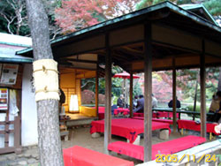
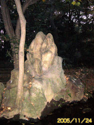
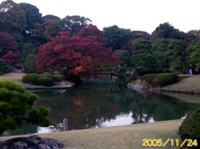
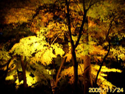
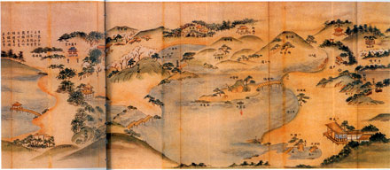

前回、深川・清澄庭園を訪れたとき、入口に置かれている都立庭園のパンフレットが目にとまった。「東京もみじめぐり」とあり、11月23日から12月24日の間は六義園がライトアップされ、夜、八時半まで入園できるという。
駒込の六義園といえば、五代将軍、あの"犬公方"、"生類憐みの令"の綱吉に重用された、というか少年のころから寵愛を受けた柳沢吉保の造園になる江戸・大名庭園の代表的な一つ。
この庭園を夜間、めぐり歩くことができるというのだからありがたい。
そういえば六義園は、前回訪れた深川・清澄庭園同様、三菱財閥の創業者、岩崎彌太郎が明治十年代に買い取り、全体的に岩崎好みの造園整備を施した庭である。
つまり、清澄庭園にしても、この六義園にしても最初に庭が造られたのは江戸時代ではあったが、明治期、岩崎彌太郎をはじめとする岩崎家、つまり三菱一族によって描き加え、描き変えられた庭園と見てよい。
つまり、三菱（エンピツではなく）によって描き改められた大名庭園が清澄庭園であり、六義園なのだ。
それにしても岩崎彌太郎という事業家、明治十一年には六義園、そして、その二年後の十三年には清澄庭園と、二つのかつての大名庭園をたてつづけに手に入れている。彼は、今日の、放送局や球団をどんどん買いたがるIT長者のような存在だったのかしら。それにしても大名庭園もドンと二つも買うとは豪勢なことである。
それはともかく、都の粋な（？）はからいで紅葉の季節の企画ということで、柳沢吉保と三菱財閥合作の六義園を夜、めぐり歩くことができる。
初冬の一日、ＪＲ駒込駅に降りる。巣鴨側の出口に立つと、南に六義園、北、西ヶ原方向にジョサイヤ・コンドル設計で知られる旧古河庭園がある。
前回は、地下鉄、清澄白河駅から地上に出ると西に清澄庭園、東に都現代美術館があって、二ヶ所同時に訪れたのだが、今回も、ものはついで、旧古河庭園と六義園を一緒に見てみようと思い立つ。
明かるいうち旧古河庭園を散歩、邸内の喫茶室でコーヒーでも飲んで時間を過ごし、夕方から夜にかけての六義園の光景を楽しもう、という欲張った魂胆。
さて、その見聞報告だが、旧古河庭園については次回、湯島の旧岩崎邸とともにお伝えしたい。と、いうのは、もちろん、旧岩崎邸も、この旧古河庭園同様、鹿鳴館やニコライ堂を設計したジョサイヤ・コンドルによるものだから。（そして惜しくも現存はしていないが清澄庭園内の洋館もコンドルの設計だった！）
●和歌にちなむバーチャルな八十八景を再現したテーマパーク
旧古河庭園から六義園に戻る。紅葉まつりということもあって来園者は多い。今回の六義園探訪の主眼は、もちろんライトアップされる夜の庭園めぐりというイベントを楽しむことでもあるが、さらに、江戸時代の柳沢吉保の庭づくりと、明治に入ってからの岩崎彌太郎をはじめとする三菱一族の補修、手の加わえ具合いを頭に入れつつ「お庭拝見」したいと考えた。
もともと庭園とは「いつ、誰が造ったか」も大切ではあるが、それ以上に「その後、誰がどのように管理、あるいは手入れをしてきたか」が重要となる。
庭園は、他の建築や彫刻、絵画といった造形美術とは、ここが異なる。手入れをしなければ時とともにすぐに変貌、あるいは荒廃する。つまりナマモノ性の強い"作品"なのである。
庭園をしばらく放置すれば、草木はすぐに生い繁り、池は腐り、滝は枯れ、石組みなども定かならぬものとなる。逆に、後の管理、補修整備によっては当初の姿とは異る庭も出現する。だから、造園当初の庭園を思い浮かべようとするのなら、当時の図面や文書を頼りにするしかない、ということになる。
――といったことぐらいは大学の授業で聴き憶えていたので、六義園に関しての予習をする。といってもどうということではない。雑誌に載っていた国立国会図書館蔵の江戸時代の「六義園全図」(＊本文末の写真参照）のコピーをじっくりと見て、庭園全体の雰囲気を覚えておくことである。
「六義園全図」で見る六義園は、大名庭園とはいえ、豪快というよりは、優美で、女性的といってもよい。
もともと柳沢吉保が綱吉から拝領した、元前田家（加賀藩）下屋敷のこの駒込の地を別荘庭園としようとしたときの基本コンセプトは『万葉集』と『古今和歌集』にあった。
『古今和歌集』の序には、中国、漢詩の基本構成である六義（風、雅、頌、賊、比、興）に対応して日本風六義（そえ歌、数え歌、なづらえ歌、譬（たと）え歌、ただごと歌、祝い歌）の六種をあげこれを六義「むくさ」と読ませている。
六義園の名もこれに由来し、「むくさのその」と読ませ、造園でも『万葉集』や『古今和歌集』に登場する名所、旧跡をテキストとした「見立て」の八十八景を配置している。
つまり柳沢吉保による六義園は、吉保好みの和歌の世界を一つの庭園の中に再現しようとした驚くべきバーチャルなテーマパークであったのだ。
和歌にまったく思い入れ（いや、素養）のないぼくには、それらに因む石組みや橋、あるいは築山のネーミングなどほとんど煩雑なだけだが、現存する景と和歌や歌枕との関連を一部だけ紹介しておこう。
◎玉藻磯 和歌の浦に千々の玉もをかきつめて万代まてもきみか見んため
◎妹山・背山 いもせ山中に生たる玉ささのひとよのへたてさもそつゆけき
◎渡月橋 和歌のうら芦部の田鶴の鳴声に夜わたる月の影そさびしき
◎藤代峠 紀国にあり。四方をみおろす景地にて、無双の景とかや、
歌には藤代の三坂と読めり。
と、まあ、こんな、文芸的、あまりに文芸的な見立ての景八十八ヶ所が六義園を構成するメインテーマであったわけである。いわば、吉保の文芸ごっこである。それを庭の中に再現しようというのだから、ずいぶん資金と労力のかかる文芸遊びをしたものである。
●綱吉の意向を配慮せずに庭造りするなどありえない
ところでぼくは、江戸時代の六義園を、"吉保好み"で造られたと書いてきたが、じつは、本音では、そう思ってはいない。六義園に関する資料や案内記にそのように書かれているので、とりあえず"吉保好み"と書いてきただけなのだ。
何がいいたいか、というと、吉保が彼の"文芸好み"から造ったといわれるこの六義園は、じつは吉保の好みもあったかもしれないが、それに優先して"綱吉好み"を想定しての庭園だったのではないだろうか、と推理するのである。
五代将軍綱吉と柳沢吉保の関係は、ちょっとでも江戸の歴史に関心のある人なら皆知っているほどの"特殊"なものである。
綱吉の吉保に対する寵愛ぶり、重用ぶりが当時の常識の範囲をこえている。
犬公方の綱吉はもちろん犬歳。ところが吉保もまた綱吉の一まわり下の犬歳。将軍の近くにつかえて、膳番や庭方などのいわゆる雑用をつとめる小納戸役から、異例の抜擢により綱吉の側用人（綱吉が創置、将軍の側近中の側近）となり、さらに老中格の川越藩主、そしてついには一五万一二〇〇石大老格の甲府藩主にまでのぼりつめる。
思えば当時、館林の城主・十九歳の綱吉に、七歳の吉保が父・安忠につれられて初めてお目見えして以来（このとき綱吉は一まわり年下の吉保が、たちまち気に入ってしまい、殿中を連れ歩いたほどという）の関係なのである。
吉保の「吉」の字も、綱吉の吉の一字を賜ったもので、これは、将軍が「柳沢家とは自分の親族同様の付き合いをするつもり」ということを世に公言したようなものという。吉保に対しては、なにもかもが、破格のあつかいなのだ。
それが吉保七歳のときから、綱吉の死まで一貫して変わらないというのだから、綱吉の「気に入ったらトコトン」という精神構造にも興味がわく。もちろん吉保の方の綱吉に対する、"天才的"な絶妙の献身の功もあったにちがいない。
そんな吉保が綱吉から与えられた駒込の地、（東京ドームの約三・三倍）ここを庭園とするとき、吉保が、ただ自分好みの庭を造るなどとはとうてい考えられないではないか。
綱吉の性格を知りつくしている吉保である。だからこそ、じつはしっかりと綱吉が喜ぶ、綱吉のおぼえめでたい庭を造ることに心を配ったのではないか。
それでなくても、六義園の池は綱吉の屋敷であった小石川白山御殿（現在の小石川植物園）と同じ、綱吉による千川上水の分水を引き込んでいる。いわば、将軍家の水を分けてもらって池造りをしている。なにもかにもが綱吉の厚い加護のもとにある。
だからぼくは、吉保の六義園は、じつは綱吉の見えぬ力がはたらいた、つまり綱吉好みの庭にちがいない、と確信している。吉保は、綱吉の言葉をまつまでもなく、綱吉好みの庭を造り上げ、二人だけの密やかな語らいを空間化した。だからこそ、綱吉は吉保の造ったこの庭に五十八回も！訪れたのではないか。
改めて国立国会図書館蔵の「六義園全図」を見る。その全体的に女性的ともいえる造園図からは、やはり影の作庭者の綱吉の姿が浮かんでみえてしまうのだ。
●大名と豪商が精魂かたむけて作った庭が300円で
その六義園に入ると、入口正面に、今日の六義園の売り物の一つ、シダレザクラの巨木が客を迎え入れるように立っている。
園内、滝見の茶屋付近には、まるでワニが水面から顔を出したような怪石や、いかにもグロテスクな性的シンボルを連想させる岩が配されている。（＊本文末の写真参照）これら野放図ともいえる陽性の造園が吉保、綱吉の趣味であるはずがなく、当然、明治に入ってからの三菱一族によって改修された造園にちがいない。
また、今は、庭内の見どころの一つといわれる池の中に浮かぶ洞窟石組の蓬莱島も、江戸時代の「六義園全図」には見当たらず。岩崎彌太郎の没後（彌太郎は六義を買い取った七年後の明治十八年に没）、弟の彌之助が大修復にとりかかっているので、このとき据えられたものではないだろうか。
このように、今日の六義園のポイント、ポイントは、明治期に入ってからの、岩崎家による改修の後と思われる部分が多く見られる。しかし園内の全体の雰囲気は依然として、やわらかく、女性的な雰囲気に満ちた庭造りとなっている。つまり、吉保、綱吉の気配が残っているわけだ。
前回の清澄庭園で"岩崎的庭石"の知識をしっかりと身につけてしまった同行のО君は「うわーっ、ひどいですね、この陰陽石、モロじゃないですか」とか「あ、ここにも佐渡の赤玉石が」と、ちょっとした庭石マニアになってしまったようだが、はたして、О君は、この庭から吉保の企てた和歌の世界を感じとることができただろうか。
吉保の六義園にせよ、岩崎の六義園にせよ、これは単に俗を離れた、風雅な庭園などといったものではなく、いろいろな思わくや強い感情が渦まく中で造園されたものにちがいない。
それが今日、公けの庭として、見事なまでに手入れされ、われわれ一般人が、ただただ美しい景観の庭としてたったの三百円で享受できる。日本の国力と長年の平和なくしては叶うことではない。大名と豪商が精魂かたむけて造り、今日、国が巨額の資金を投じて保たれている庭が三百円で見られるのだ。
園路は、竹を割って作られた照明によって足元が照らされ、紅葉した樹々はライトアップされて文句なく美しい。
ただ、昼間なら当然上ぼって園内の田鶴端や中島の妹與背山などが一望できる藤代峠へは、夜間は道の入口が止められている。昼間でも足をふみはずすと危険なほど急な部分もあるのでこれは仕方がない。飛び石を渡っての滝の近くも行けない。
夜の庭園を、人々がさまざまな会話を交わしながらそぞろ歩いて行く。暗いからいっそう耳が敏感になるのだろうか。
そんな、夜の六義園、モミアゲの少々長いО君と男の二人連れというのはライトアップされたロマンチックな庭園に対して申し訳ないような気がするが、事の成り行き上、仕方がない。
こちらの気配を察したのかО君、「売店が出ていますね。あ、燗酒もありますよ」とアピール。О君は燗酒、ぼくは缶ビールを手にもう一まわり。これはと思うスポットでО君はデジカメのフラッシュをたく。
こうして夜の六義園を満喫した二人は、庭園を後にして駒込駅手前まで戻り、かなり急な坂を下りてゆくことにする。
☆ ☆ ☆
坂を下り切った線路下の両側に、小さな商店街があるからだ。そこで、柳沢吉保と岩崎一族の庭造りの執念の毒気を落とすための居酒屋さがしをする。
そういえば、以前、この商店街に一人でフラリと来たとき、一軒のBarに入った。そのBarの向かいがガラス戸になっていて、そのガラス戸の中を外からのぞくと、なんと中は釣り堀だった。商店街の一角、しかもBarの向かいに釣り堀、という空間に意表を突かれた憶えがある。
たしかこのあたりだったはず、と釣り堀をさがすが見当らない。見当をつけた場所は沖縄物産の店になっている。記憶違いかも、あるいは夢で見た風景かとあきらめて、Ｙ字路で店を構える呑兵衛という居酒屋に入る。横尾忠則ではないが、ぼくもＹ字路の光景が大好きだ。まだ六時前、ハッピーアワーで飲み物はすべて半額。ぼくがトイレに立った間にО君、店の人に釣り堀の有無をたずねたようだ。果せるかな、さっきの沖縄物産の店が、あの釣り堀だったという。夢でもなければBarで酔っ払ったための妄想でもなかったわけだ。
ところで、この居酒屋で季節柄ということでブリ大根を注文したのだが、出てきたブリ大根を見ると、なにか庭の石組みに見えてしまうのはマイッタ。
呑兵衛を出て、もう少し夜の駒込の町歩きをしようということになる。しばらく歩くと古本屋がポツン、ポツンと、それも三軒もある。以前来たときには気がつかなかった。どれも比較的最近の店なのだろうか。
古本屋を見つけて急にうれしくなる。サッと棚を流し読みするだけで気がすむのだ。だが、やっぱり古本屋はのぞくべきだった。ブックス橘屋という店の新書本コーナーに講談社現代新書の『将軍と側用人の政治』（大石慎三郎著・一九九五年刊）が。
将軍と側用人といえば、ズバリ五代将軍綱吉と柳沢吉保をおいて他にない。またこれに続く新井白石、八代吉宗、そして田沼意次。
これは、綱吉と吉保がわれわれの六義園探訪を認めてくれてのプレゼントにちがいないと喜々として四〇〇円を投入。ご縁とは気なるものであると納得の夜の駒込の毒抜き散歩となった。
さて、次回は明治の東京に「コンドルが舞いおりた」話を書こう。もちろん、このコンドルとは旧古河庭園、また、湯島の旧岩崎庭園、そして今はないが清澄庭園内の洋館を設計したジョサイヤ・コンドル。その建築と庭園めぐりをする。
 |
 |
| 毛氈（もうせん）敷きの茶屋にも灯がともる |
モロ、シンボリックな岩にО君、狂喜、感激！ |
 |
 |
| 植栽も含めて全体的に柔らかな印象の空間 |
ライトアップされた夜の庭園は男同士で歩くものではない |
 |
| 柳沢吉保下屋敷「六義園全図」国立国会図書館蔵 『歴史と旅』2001年3月号より |
|